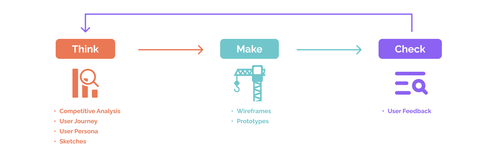

MonsterDex: The Ultimate Monster Encyclopedia
How we Enhanced Gameplay and Eliminated Hassle for Trainers

What I did
- Research
- UI Design
- UX Design
- Development Handoff
Who I Worked With
Willie
Mobile Engineer
Timeline
Mar - May 2023
/Introduction
Catching ‘em all shouldn’t be this frustrating...
As a dedicated Pokémon enthusiast, I often found myself relying on online Pokédex tools to look up stats, abilities, and evolution paths. While there are several excellent Pokédex websites available, finding a reliable mobile app that offers the same depth of information and usability has been surprisingly difficult. Many existing Pokédex apps suffer from outdated data, clunky interfaces, frequent crashes, or confusing navigation, making it frustrating for trainers who need quick and accurate information while on the go.
This gap in the mobile app space inspired me to create MonsterDex, a streamlined, user-friendly app designed to bring the reliability and depth of top-tier Pokédex websites to mobile devices. With accurate data, intuitive navigation, and an engaging interface, MonsterDex aims to be the ultimate resource for Pokémon trainers worldwide.

What is LeetCode?
LeetCode is an online platform designed to help software engineers practice coding skills and prepare for technical interviews. It offers a vast collection of coding problems that cover data structures, algorithms, and system design concepts.
/Problem Breakdown
Through secondary research, I explored online forums, blog posts, and videos where developers shared their experiences studying LeetCode. This helped me uncover key pain points and strategies developers commonly use.
LeetCode’s web-only access limits developers' ability to review problems on the go
Many developers find it inconvenient that LeetCode practice requires access to a computer, making it difficult to review problems during downtime, such as commuting or waiting in line. This limitation hinders their ability to build consistent study habits and reinforce problem-solving strategies effectively.
Reviewing past problems is crucial for reinforcing problem-solving strategies
Revisiting previously solved problems helps developers reinforce problem-solving strategies by identifying patterns and improving their understanding. This process allows them to internalize key concepts, making it easier to apply similar approaches to new challenges.
Many developers use spreadsheets or note-taking apps to track solved problems
Many developers rely on spreadsheets or note-taking apps to track solved problems. While this method helps with organization, it often lacks structure for effective review. As one developer shared, they used a spreadsheet to track completed problems but also wanted to revisit them later to reinforce their understanding and memory.
/What Tool Should We Make?
In short, users want an accessible tool that helps them efficiently reinforce problem-solving patterns, algorithms, and data structures anytime, anywhere.
By leveraging active recall and spaced repetition, flashcards help developers strengthen memory retention and improve their ability to apply problem-solving patterns during technical interviews.
With a mobile-friendly flashcard tool, developers can practice efficiently during downtime — whether they’re commuting, waiting in line, or taking a break — ensuring consistent progress toward mastering coding concepts.

/How Do We Design a Flashcard App?
The design process for LeetCard follows a lean UX methodology. It began with researching whether users of LeetCode would find value in a flashcard app to enhance their study process. This approach allowed me to quickly validate the concept and determine the feasibility of moving forward with the project.
THINK

/Research & Early Validation
Competitive Analysis
To understand the market landscape, I conducted a comprehensive competitive analysis of existing LeetCode study tools. This analysis allowed me to identify their strengths and weaknesses while uncovering opportunities for improvement. Although there were no direct competitors to LeetCard, I found many indirect competitors that offered similar features.
Indirect Competitors
Study Tool
Progress Tracking
Direct Competitors
I discovered that many users were crafting their own solutions by combining different services or building their own tools, as there were no direct competitors fully addressing their needs. By analyzing the key components users relied on, I identified essential features to incorporate into our product. This informed the next step: conducting a task analysis to understand the user's workflow and key tasks.
User Journey
To understand the user’s experience and challenges in preparing for technical interviews, I mapped out a user journey of the LeetCode study process. This journey revealed key pain points, such as the inefficiency of manually tracking and recalling solved problems. By analyzing each stage from solving problems to reviewing past solutions, I gained insights into user frustrations and opportunities for improvement, which directly informed the design of LeetCard’s core features.

User Persona
I created a persona to represent our target user, a software engineer who is preparing for technical interviews. This persona helped me understand the user's needs, goals, and pain points, guiding the design process to ensure the app would meet the user's expectations and provide value.

/Defining Key Areas for Improvement
Competitive analysis, user journey mapping, and interviews revealed major challenges in how developers track and review LeetCode problems. Spreadsheets and notes are inefficient for quick recall and disrupts learning. Additionally, studying is restricted to desktop access, limiting flexibility. These insights shaped the core design features to enhance accessibility, recall efficiency, and engagement.
Enable Study on the Go
A mobile-first experience allows users to review and reinforce problem-solving strategies on the go, fitting study sessions into daily routines.
Replace Manual Problem Searching with Randomized Recall
Instead of manually selecting problems to review, a quiz-like recall mode can surface problems dynamically, reducing decision fatigue. Spaced repetition can help reinforce weaker areas by resurfacing problems strategically.
Focus on Solutions with Predefined LeetCode Problems
The app will predefine LeetCode problems, so users only need to input their solutions—eliminating manual entry. If users don’t have a solution, AI-powered assistance can provide hints or generate example solutions to aid learning.
/Information Architecture
User Flow
To simplify the MVP and maximize user value, I focused on incorporating core features that addressed the primary needs of our target audience. I mapped out the main user flow for LeetCard, which covers starting a study session, progressing through problems, and completing the session. This flow includes key decision points, such as allowing users to exit mid-session with the choice to save or discard progress.

Content Mapping
First, I used content mapping to organize key features and information within LeetCard based on the app’s core user flow. I began by identifying the primary actions users take, such as selecting a study plan, starting a session, and reviewing progress.
From there, I grouped related content into distinct categories: Study Plan, Cards, Profile, and app related settings. This method allowed me to establish a clear information structure that aligns with user goals, ensuring content is intuitive and easy to navigate.

Using the grouped content from my content mapping process, I translated the structure into a clear information architecture that supports key user actions. Each content group became a core section in the app. This structured IA ensures the app’s layout aligns with user goals, streamlining navigation and enhancing the overall study experience.
MAKE

/MVP Development
Prototypes and Navigation Design
Keeping the MVP in mind, I developed prototypes to visualize the app's layout and functionality. Based on user needs, I implemented a bottom navigation bar to create a more intuitive experience. This decision was made to facilitate seamless navigation between the "Study Plan" and "All Cards" sections, particularly for users who frequently switch between these features while organizing their study plans.
/Design System
I began developing the design system once the prototype had taken shape to ensure consistency, efficiency, and maintainability across the LeetCard app. Since the UI designs were all unique, establishing a cohesive system was essential to unify visual elements, interactions, and patterns.
The design system defines key components such as buttons, cards, color schemes, and typography, providing clear guidelines and reusable elements. This scalable foundation not only streamlines development but also ensures future updates and new features maintain a consistent user experience.
CHECK

/Launch and Post-Release Analysis
To expedite the release process, we launched the app without conducting traditional user testing. Instead, we focused on gathering real-world usage data to inform improvements. While user testing can provide valuable feedback, we prioritized swift market entry to gain a more authentic and comprehensive understanding of user behaviors and preferences.
By monitoring user interactions and collecting feedback post-launch, we committed to an iterative process of refining the app, ensuring it meets the needs of our target audience and delivers a user-centric experience.

The iOS version launch generated an overwhelmingly positive response. Our developer shared the product on Reddit, where it received over 300 upvotes within a single day. This feedback highlighted strong demand for the app, with many users requesting an Android version, which is currently in development. Additionally, the expressed interest in a web version validated our roadmap and aligned with our future plans for platform expansion.
/Future Directions
How Can We Improve Retention and Engagement?
While the app's launch was a success, achieving over 1,000 downloads in the first two weeks and receiving praise for its aesthetic design and intuitive UI, we noticed that active user engagement fell short of expectations.
To address this, we are focusing on the following future directions:
1. Enhancing Retention:
- Adding features to improve usability and encourage regular app
usage.
- Refining the user experience based on behavioral data
and user feedback.
2. Gathering Insights:
- Conducting user interviews to understand pain points and unmet
needs.
- Iteratively updating the app to better align with user
expectations.
With these initiatives, we aim to create a more comprehensive study tool tailored to the needs of software engineers and ensure sustained user engagement.